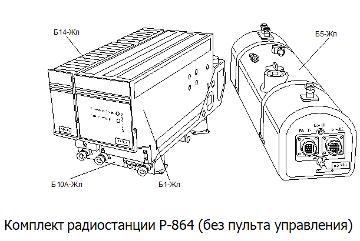
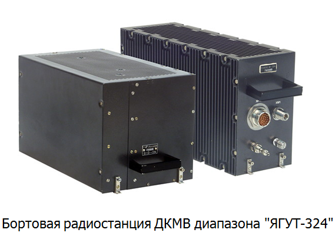
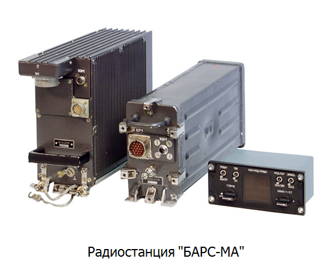
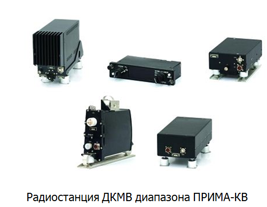
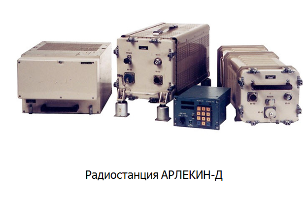

Дальняя радиосвязь. Радиостанции декаметрового диапазона.
Дальняя радиосвязь
Бортовые радиостанции относятся к основным техническим средствам воздушной связи и предназначены для обеспечения радиосвязи самолетов с наземными пунктами управления, а также между самолетами, находящимися в воздухе. Они используются при управлении взлетом и посадкой, полетом самолетов по маршруту, при передаче команд наведения самолета на цель, сигналов оповещения, данных разведки и т.п.
В зависимости от назначения обеспечиваемой дальности связи используемого диапазона радиочастот бортовые авиационные радиостанции можно разделить на три группы. К первой группе относятся бортовые радиостанции ближней связи. Они обеспечивают командную радиосвязь в пределах прямой видимости (до нескольких сотен километров) и работают в диапазоне метровых и дециметровых волн.
Бортовые радиостанции относятся к основным техническим средствам воздушной связи и предназначены для обеспечения радиосвязи самолетов с наземными пунктами управления, а также между самолетами, находящимися в воздухе. Они используются при управлении взлетом и посадкой, полетом самолетов по маршруту, при передаче команд наведения самолета на цель, сигналов оповещения, данных разведки и т.п.
В зависимости от назначения обеспечиваемой дальности связи используемого диапазона радиочастот бортовые авиационные радиостанции можно разделить на три группы. К первой группе относятся бортовые радиостанции ближней связи. Они обеспечивают командную радиосвязь в пределах прямой видимости (до нескольких сотен километров) и работают в диапазоне метровых и дециметровых волн.
Использование KB радиостанций для ближней связи ограничено тем, что при работе в указанном диапазоне волн может иметь место зона молчания, в пределах которой связь отсутствует. Поэтому на самолетах с большим радиусом действия наряду с KB радиостанциями устанавливаются УКВ радиостанции ближней связи. Имеется возможность использовать КВ радиостанции для связи с низколетящими самолетами в то время, как на УКВ такую связь обеспечить нельзя, если отсутствует прямая видимость между корреспондентами.
Как известно, KB радиостанции в большей степени подвержены воздействию различного рода помех, чем УКВ радиостанции, а качество коротковолновой связи существенно зависит от времени суток и года, от выбора рабочей радиочастоты, от географической зоны.
К третьей группе бортового радиосвязного оборудования относятся аварийно-спасательные радиостанции (АСР) индивидуального и группового пользования, а также аварийные радиоприемные устройства.
Аварийно-спасательные радиостанции индивидуального пользования предназначены для связи летчика (члена экипажа) летательного аппарата, потерпевшего аварию или совершившего вынужденную посадку, с поисково-спасательными службами, а также для автоматической передачи сигналов бедствия, информирующих о месте аварии. Радиостанции этого типа работают в УКВ диапазоне на международных аварийных частотах 121,5 или 243 МГц. Они входят в комплект индивидуального аварийного запаса члена экипажа, допускается размещение их в карманах полетного обмундирования.
Аварийно-спасательные радиостанции группового пользования предназначены для вызова поисково-спасательных групп и привода их к месту аварии при вынужденной посадке воздушного судна. Они работают на международных аварийных частотах в диапазоне коротких волн и входят в комплект бортового аварийного запаса, сбрасываемого по команде при возникновении аварийной ситуации.
Радиостанции декаметрового диапазона




